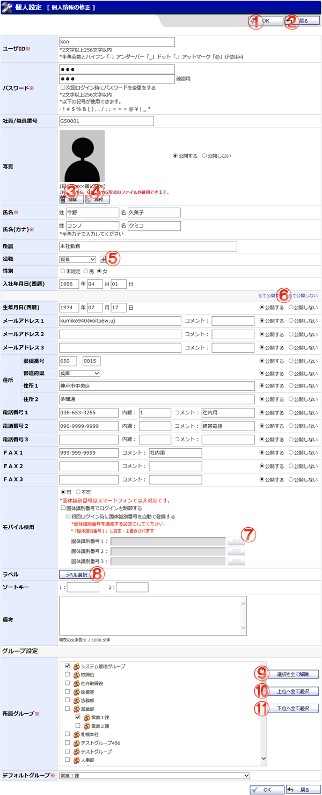

ユーザの個人情報の修正を行う画面です。

機能説明
OKボタン修正確認画面へ遷移します。入力内容に不備がある場合エラーメッセージが表示されます。 |
戻るボタン遷移元の画面へ遷移します。 |
|---|---|
削除ボタン現在設定されている写真を破棄します。 |
添付ボタン写真を添付できます。写真はパソコン内から選択しアップロードします。 |
役職追加ボタン役職を追加する場合に使用します。 |
公開区分一括設定ボタンユーザ情報の公開区分を一括で設定します。 |
履歴ボタン固体識別番号の入力履歴をポップアップ画面で表示します。[固体識別番号でログインを制御する]にチェックが付いている場合のみ使用できます。 |
ラベル選択ボタンラベル選択ポップアップが表示されます。ユーザにラベルを設定できます。 |
選択を全て解除ボタン所属グループを何も選択されていない状態にします。グループを誤って選択しすぎた場合など、リセットするために使います。 |
上位へ全て選択ボタン下位のグループが所属している上位のグループを全て選択します。 |
下位へ全て選択ボタングループに所属している下位のグループを全て選択します。 |
表示・入力項目説明
ユーザID
ユーザIDを入力します（2文字以上256文字以内）。
この項目はシステム管理グループに所属しているユーザの場合に表示されます。
パスワード
パスワードを入力します（パスワードルール設定により2～256文字以上20文字以内）。
この項目はシステム管理グループに所属しているユーザの場合に表示されます。
社員/職員番号
社員/職員番号を入力します（20文字以内）。
写真
写真を設定します。添付ボタンを押すと設定する写真を選択できます。
氏名
性、名を入力します（それぞれ30文字以内）。
氏名カナ
性カナ、名カナを入力します（それぞれ60文字以内）。
所属
所属を入力します（20文字以内）。
役職
役職をを選択します。
性別
性別をを選択します。
生年月日(西暦)
生年月日(西暦)を入力します。
メールアドレス1
メールアドレスを入力します（256文字以内）。コメントが入力できます（10文字以内）。
メールアドレス2
メールアドレスを入力します（256文字以内）。コメントが入力できます（10文字以内）。
メールアドレス3
メールアドレスを入力します（256文字以内）。コメントが入力できます（10文字以内）。
郵便番号
を郵便番号入力します。
都道府県
都道府県を選択します。
住所1
住所を入力します（100文字以内）。
住所2
住所を入力します（100文字以内）。
電話番号1
電話番号を入力します（20文字以内）。内線番号を入力します（10文字以内）。コメントが入力できます（10文字以内）。
電話番号2
電話番号を入力します（20文字以内）。内線番号を入力します（10文字以内）。コメントが入力できます（10文字以内）。
電話番号3
電話番号を入力します（20文字以内）。内線番号を入力します（10文字以内）。コメントが入力できます（10文字以内）。
ＦＡＸ1
ＦＡＸ番号を入力します（20文字以内）。コメントが入力できます（10文字以内）。
ＦＡＸ2
ＦＡＸ番号を入力します（20文字以内）。コメントが入力できます（10文字以内）。
ＦＡＸ3
ＦＡＸ番号を入力します（20文字以内）。コメントが入力できます（10文字以内）。
モバイル使用
モバイルプラグインに関する設定を行います。
固体識別番号でのログイン制御、初回ログイン時に固体識別番号を自動登録するかを選択します。
固体識別番号1～3を入力します(50文字以内)
この項目はシステム管理グループに所属しているユーザの場合に表示されます。
ソートキー
任意のソートキーを設定する事が出来ます。同じ役職でも並び順を設定したい時などに設定します。
備考
備考を入力します（1,000文字以内）。
所属グループ
所属するグループを選択します。グループは複数所属することができます。グループには階層があり、上位階層を選択すると、その下位階層も選択されます。
この項目はシステム管理グループに所属しているユーザの場合に表示されます。
デフォルトグループ
所属するデフォルトグループを選択します。選択したデフォルトグループは各プラグイン機能での初期表示などに使われます。
この項目はシステム管理グループに所属しているユーザの場合に表示されます。